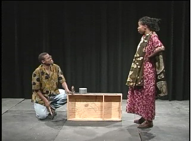

|

|
RATI
BA YA SHULE (SCHOOL SCHEDULE) Lela: Hujambo Hasani? Hasani: Sijambo. Habari za leo? Lela: Nzuri. Habari za nyumbani? Hasani: Salama. Lela, ninyi mnaanza vipindi saa ngapi? Lela: Sisi tunaanza vipindi saa moja na nusu asubuhi. Kila kipindi ni dakika arobaini. Kipindi cha kwanza kinaanza saa moja na nusu mpaka saa mbili na dakika kumi. Kipindi cha pili kinaanza saa mbili na robo mpaka saa mbili na dakika hamsini na tano. Kipindi cha tatu kinaanza saa tatu kamili mpaka saa tatu na dakika arobaini. Kipindi cha nne kinaanza saa tatu na dakika arobaini na tano mpaka saa nne na dakika ishirini na tano. Sisi tunakwenda mapumziko saa nne na nusu mpaka saa tano na dakika kumi. Sisi tunatoka shule saa nane na dakika arobaini mchana. Hasani: Sisi ratiba yetu ni sawa na ratiba yenu. |
© African Studies Institute, University of Georgia.